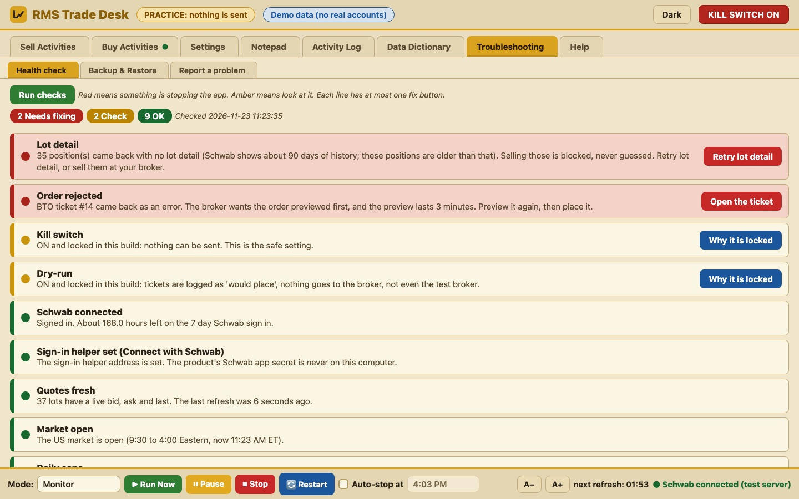

Security
The program runs on your computer. Your keys and account data stay there. We never receive them.
Keys stay with you
Your broker keys and sign-in tokens are stored on your own computer. On Windows they are encrypted with Windows DPAPI, tied to your own Windows account. After you enter a key, only its last 4 characters are ever shown.
Never sent to us
Keys, secrets, tokens and sign-in codes are stripped from the Activity Log, backups and problem reports. We cannot see your computer and have no access to it.
Schwab sign in by OAuth
You sign in on Schwab's own page and press Allow. We never see your Schwab password. The sign in lasts 7 days. The program warns you 2 days before it ends and stops plainly when it does.
Local only
The program listens on 127.0.0.1 only and refuses any other address. Every request carries a random token made fresh at each start. No outside website or script is loaded.
Audit log
The Activity Log records every refresh, scan, ticket, edit, preview, order, cancel and setting change. You can export it.
Rate limits
Order requests and all other requests are each held under 100 in any 60 seconds, below the limit Schwab reports. Quotes are sent in batches. If a broker says slow down, the program waits and tells you.
The sign-in helper
The Schwab app secret cannot be placed on every member's computer. For the one click Connect with Schwab option, a small web helper of ours holds that secret. It does only the sign-in exchange and the refresh. It passes tokens back sealed so that only your own computer can open them, stores nothing, logs no tokens and accepts no calls from web pages. No order, account or position data ever passes through it.
If you prefer, use your own Schwab developer key instead. Then the helper is not used at all.
No unattended trading
The program never places an order without your confirmation. There is no auto mode. If we ever propose one, it will be announced first and be off by default.

Found a security problem? Email support@cefcomplete.com with the subject RMS Trade Desk security.